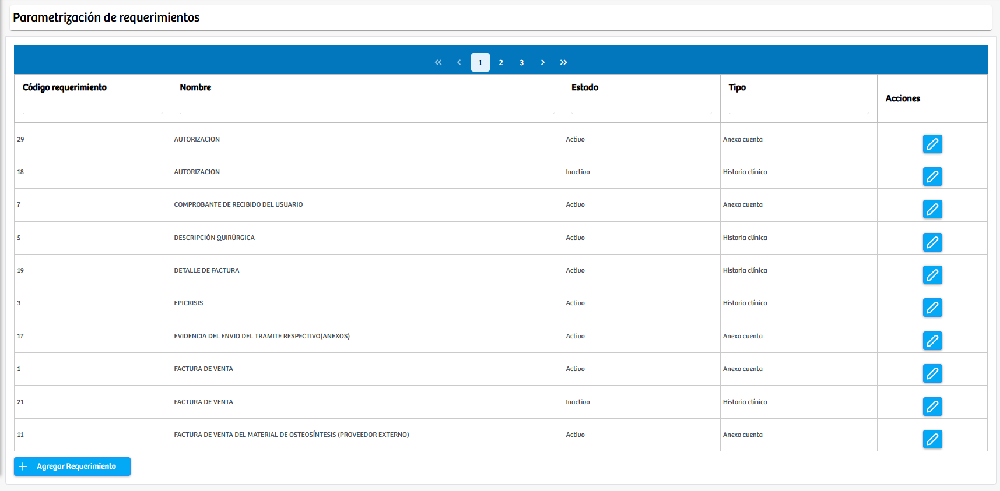

Modulos Sas-Web
Funcionalidades
Parametrizar Plantillas Por Requerimientos
El módulo Parametrizar Plantillas Por Requerimientos, ubicado dentro del menú de Armado de Cuentas, permite gestionar los diferentes requerimientos que serán asociados posteriormente a los convenios. Su función principal es organizar y administrar los tipos de requerimientos necesarios para los procesos de facturación, auditoría o soporte documental dentro del sistema, garantizando que cada convenio cuente con la información y anexos requeridos según su operatividad.
Al ingresar al módulo, se muestra una tabla con todos los requerimientos previamente creados. En esta vista se pueden consultar datos como el código del requerimiento, su nombre, el estado en el que se encuentra (activo o inactivo) y el tipo al que pertenece, como Historia clínica o Anexo cuenta. Además, cada registro cuenta con un botón de edición que permite modificar su información cuando sea necesario.

Para crear un nuevo requerimiento, el usuario debe presionar el botón Agregar Requerimiento, ubicado en la parte inferior de la pantalla. Esto abrirá un modal que contiene tres campos fundamentales: Nombre del requerimiento, Tipo y Estado. Luego de diligenciar estos datos, basta con seleccionar Guardar para registrar el nuevo requerimiento en el sistema. Una vez creado, este podrá ser utilizado en la configuración de convenios y en la validación de documentos requeridos para los procesos administrativos.